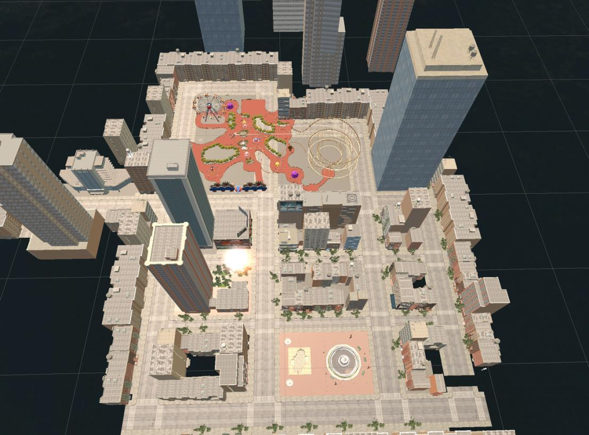

03 / Virtual environments · Research implementation
Urban.
Designing a
fair comparison.
A city built in Unity to help investigate what nature content contributes to a virtual experience.
Explore the research logic ↓Original Unity walkthrough / Urban comparison condition
01 / Research by making
Change the content.
Keep the comparison fair.
For a planned randomized trial of nature-based VR during pediatric chemotherapy, I built the urban comparison environment against an existing nature environment.
The design aim was to isolate the contribution of nature content by matching spatial and interaction structure. I developed the urban condition; I did not design the original study or nature environment.
environmental zones
discovery task
interaction sequence
Matched by design: overall scale, pathways, spatial proportions and task structure. Equivalent engagement and clinical effects have not been established.
02 / Environment atlas
Four zones.
One connected city.
Amusement park, fountain plaza, shopping street and residential street.

Zone 01 / Play
Amusement park
Explore the Ferris wheel, rollercoaster and connected pedestrian paths.
Zone 02 / Water
Fountain plaza
Move around the fountain, seating and adjacent pool.
Zone 03 / Commerce
Shopping street
Shopfronts, signs and street details define the commercial setting.
Zone 04 / Neighborhood
Residential street
Follow tree-lined sidewalks past neighborhood buildings.
Interaction in action
Discover. Choose. Return.
Approach → choose to watch → return to exploration.
Implemented discovery logic
A shared invitation to explore.
- 01Navigate
- 02Approach an object
- 03Receive a video prompt
- 04Watch or keep exploring
Proximity detection and object-triggered video prompts mirror the nature environment’s bird-discovery mechanic. Participants retain the choice to watch or continue.
Original prototype capture. The dark video-player interface is part of the application; the portfolio preview plays silently on a loop.
Demonstration footage to be added.
Contribution & study status
A working comparison environment,
not a clinical result.
My contribution is the urban prototype and its matched interaction structure. The randomized trial and hospital deployment are planned; this case study makes no claim about patient outcomes or treatment effects.